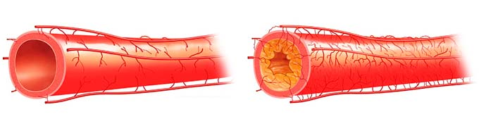
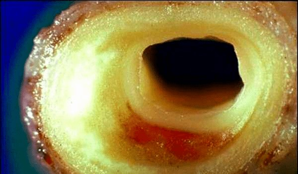

Планирую дожить до 130 лет. 116-летняя Христиния Нагорная рассказала как борется с высоким давлением без таблеток
Старейшая жительница Украины, которая входит в тройку самых пожилых людей планеты, отметила свой 116-й день рождения
Большого количества гостей на 116-й день рождения Христиния Аврамовна Нагорная не ждала. Уже много лет она живет одна. Единственная дочь бабы Христи умерла 16 лет назад. Внуки и правнуки живут далеко. Иногда в хату к старейшей жительнице Украины заходит внук, который раз в год приезжает к бабушке в далекое село Жадово Черниговской области из Киева.
В свои 116 лет Христиния Аврамовна чувствует себя очень молодо. Пару лет назад ей удалось избавиться от хронической гипертонии, которая мучила ее уже 70 лет! Как же ей это удается? Долгожительница поделилась своим секретом с нашим корреспондентом.
«Уже несколько лет я снова могу сама работать в огороде. Живность держу - кроликов, кур»
.jpg)
— Корреспондент: Христиния Аврамовна, главный вопрос – как сохранять такую жизнерадостность, здоровье, бодрость, да еще и за огородом ухаживать в столь почтенном возрасте. В чем ваш секрет?
- Я не всегда была такой. Я всю жизнь проработала школьным учителем. А это очень нервная и активная работа. В 50 с небольшим лет у меня начало часто повышаться давление, сначала редко, потом все чаще и чаще, а потом перестало снижаться совсем. То есть, было повышенным всегда. Развилась возрастная гипертония.
Врачи назначили лекарства для снижения давления. Сейчас уже даже не помню какие. Они помогали, но если вдруг пропустил прием такой таблетки, то давление сразу же повышалось. Насколько я знаю, даже сейчас так лечат гипертонию, за 20 лет ничего не поменялось. Может быть, только таблетки современнее стали.
При этом я продолжала работать, хотя уже тогда чувствовала себя старушкой. А однажды меня увезли на скорой прямо из школы. Был инфаркт. Фактически вернули с того света. Месяц пролежала в городской больнице. Потом выписали, направили к врачу.
Тот к уже имеющимся лекарствам для снижения давления выписал другие. Как сейчас помню, каждый день принимала чуть ли ни горсть таблеток. Уходило много денег на их покупку. В аптеку как в продуктовый магазин ходила.
Дозы таблеток приходилось повышать. Но от такого лечения болезнь не прошла. И не могла пройти. В 68 лет мне дали инвалидность первой группы.
Фактически меня отправили доживать мои 3-4 года, ну может быть, 5 лет. Да я и сама понимала, что жизнь моя заканчивается. Чувствовала себя неважно. Если вдруг просыпалася с хорошим самочувствием, и ничего не болело, это было для меня как праздник.
Наверное, и умерла бы так. Если бы ни один мой старый знакомый. У него брат был академиком в Украинском кардиологическом институте еще при Брежневе. Он мне сразу сказал, что это у меня сосуды грязные. И что если очищу их, то еще могу пожить. Он мне объяснил следующее, что, по сути, сосуды – это как трубы, только внутри человека. По ним ко всем органам течет кровь, которая несет питательные вещества и удаляет из органов продукты переработки.
С возрастом сосуды загрязняются холестерином и другими веществами, так как нередко мы едим не очень здоровую и полезную пищу, пьем, курим, часто нервничаем. Сосуды загрязняются как трубы ржавчиной. Холестерин откладывается на стенках слоем, а также скапливается в различных перегибах. В итоге просвет в сосудах сужается, крови к органам начинает меньше поступать. Все органы начинают голодать и болеть. Представьте, что было бы с вами, если бы вы стали есть в 3, в 5 раз меньше, чем едите сейчас. Вы бы стали истощенными, то же самое происходит и с нашими внутренними органами.
Чтобы как-то исправить ситуацию, сердце начинает активно качать кровь. В итоге происходит естественная реакция – АРТЕРИАЛЬНОЕ ДАВЛЕНИЕ ПОВЫШАЕТСЯ.
Да, высокое давление, безусловно, опасно для сосудов, так как может их порвать или привести к отрыванию тромба, что может привести к инфаркту или инсульту. Поэтому врачи и выписывают лекарства для снижения давления. Однако из-за снижения давления органы опять перестают получать нужные вещества. Получается замкнутый круг.


*Забитые сосуды провоцируют не только повышенное артериальное давление, но и
более 87% заболеваний, развивающихся в 50-60-70-летнем возрасте
Однако мало кто задумывается о том, что из этой проблемы со здоровьем есть и другой выход – ЧТОБЫ СНИЗИТЬ ДАВЛЕНИЕ И ПРИ ЭТОМ НОРМАЛИЗОВАТЬ КРОВООБРАЩЕНИЕ ВО ВСЕХ ВНУТРЕННИХ ОРГАНОВ, НЕОБХОДИМО ПРОЧИСТИТЬ СОСУДЫ. В этом и состоит весь секрет. Как только я начала чистить сосуды, сердечно-сосудистая система полностью оздоровилась. Сердце стало работать как часы, а давление нормализовалось. Кроме того, оздоровились все внутренние органы.
Почки перестали болеть, суставы ныли раньше, тоже перестали, головные боли мучили, прошли. Чувствую в себе бодрость, полна сил. Если бы мне в 50 лет сказали, что я в 116 лет буду по огороду бегать, не поверила бы. А так я планирую прожить как минимум до 140 лет.
— Корреспондент: Как вы думаете, почему об этом способе нормализации давления и продления жизни так мало говорят врачи?
- Скажите, а кому нужны старики? Старики – это лишь обуза для всех. Их невыгодно лечить и продлевать им жизнь, потому что чем дольше мы живем, тем больше нам надо платить пенсию. Старики это балласт для любой страны. Поэтому и никто не думает, чтобы удлинять нам жизнь.
Кроме того, лечение болезней сегодня (особенно сердечных) – это многомиллиардный бизнес. Только посчитайте, сколько вы тратите на таблетки и врачей. А представьте, сколько таких больных. И все они несут деньги. Поэтому фармацевтам просто невыгодно, чтобы люди становились здоровыми. Намного выгоднее их пичкать малоэффективными лекарствами, которые помогают лишь временно.
Только мы сами хотим жить дольше, а больше никто этого не хочет, поэтому только мы сами можем себя вылечить. Принимать таблетки для снижения давления – это явно не выход. Если хотите жить долго, чистите сосуды. Только так.
— Корреспондент: Не могли бы вы рассказать, как именно вы чистите сосуды?
- На самом деле сейчас это делать проще простого. Это раньше надо было заказывать специальные травы из разных стран, делать из них специальные настойки и очищать сосуды месяцами (первая очистка заняла у меня почти 6 месяцев!). Сейчас этого делать ничего не нужно, а сама очистка занимается всего 2 недели!
Есть очень хороший препарат, который называется Гипертен. Он специально создан для очистки сосудов. Просто принимаешь этот препарат 2 раза в день и все.
Чистку сосудов я рекомендую проводить 1 раз в 2-3 года. Если вы будете это делать, проживете и 100 лет, и 120 лет, а может и 140 лет. При этом не будете болеть и будете активными и жизнерадостными. Поверьте, это лучше чем чувствовать себя разваливающимся и доживающим последние годы стариком!
Способ, рассказанный украинской долгожительницей, действительно кажется рабочим и эффективным. Неужели это так? Прежде чем публиковать этот материал и делать его доступным для читателей мы решили проконсультироваться у известного украинского кардиолога, заслуженного врача Украины, директора Института сердца Бориса Михайловича Тодурова
*Борис Михайлович Тодуров – ведущий украинский кардиолог, всю свою жизнь
посвятивший лечению людей от сердечно-сосудистых патологий. Автор многочисленных
научных работ, посвященных оздоровлению сосудов и сердца
— Корреспондент: Борис Михайлович, как вы считаете, действительно ли очистка сосудов способна оздоровить организм?
- Да, это действительно так. Чистые сосуды – залог здоровья человека. Конечно, Христиния Аврамовна описала все происходящие в организме процессы на примитивном обывательском уровне, но в целом все так и есть.
Эти методики очистки сосудов использовались еще при лечении советских партийных деятелей – генсекам ЦК КПСС регулярно чистили сосуды в санаториях. Знания о чистке сосудов перекочевали именно оттуда. Тем более что Христиния Аврамовна сказала, что знакомый у него был академиком в одном из советских институтов.
В целом же могу сказать, что это действительно нужная процедура. Сейчас все больше медиков склоняются к тому, что она должна стать обязательной для всех людей старше 50 лет. Помогает продлить жизнь, а также предупредить развитие возрастной гипертонии. Ведь именно забитые сосуды являются причиной ее появления в 96% случаев – это уже научно доказанный факт.
— Корреспондент: Не могли бы вы рассказать о препарате Гипертен. Что он собой представляет?
- Гипертен – это наш, украинский препарат, созданный Институтом кардиологии имени академика Н. Д. Стражеско. То есть ведущим институтом страны. Насколько я знаю, препарат создан на основе тех препаратов, с помощью которых оздоровляли еще во времена СССР руководителей коммунистической партии и тогдашнюю элиту. Правда, саму формулу в значительной мере ученые переработали, так как сегодняшние технологии намного более совершенные, чем были 50-60 лет назад. Соответственно, и сам препарат помогает лучше, чем тогда. Хотя и тогда он считался крайне эффективным и способным «делать людей моложе».
Основное действующее вещество Гипертен – особая форма витамина Е, которая называется альфа-токоферол. Это вещество способно проникать внутрь холестериновых молекул и разрушать их изнутри.
Данный препарат мы исследовали в Институте сердца, он очень хорошо очищает сосуды буквально за 1-2 недели приема. Хочу показать вам результаты этих исследований. Всего в исследованиях принимало участие 300 добровольцев.
- Сосуды полностью очистились от холестерина и других загрязнений – 96% исследуемых
- Снизился уровень плохого холестерина в составе крови – 98% исследуемых
- Давление стабилизировалось до нормы – 94% исследуемых
- Пропали головные боли – 99% исследуемых
- Улучшилось зрение – 74% исследуемых
- Повысилась эффективность лечения хронических заболеваний – 99% исследуемых
Помимо альфа-токоферола Гипертен содержит еще около 50-ти полезных для сердца и сосудов витаминов, макро- и микроэлементов. Не буду перечислять их все, перечислю лишь некоторые.
|
Витамин С |
Укрепляет и тонизирует стенки сосудов. Снижает вероятность развития атеросклероза и гипертонического криза |
|
Витамин А |
Нормализует проницаемость мелких капилляров |
|
Витамины В1 |
Усиливает сердечную мышцу. Препятствует возникновению инфаркта |
|
Витамин В2 |
Повышает количество кислорода в крови |
|
Витамин В3 |
Расширяет сосуды, снижает давление сразу после приема |
|
Витамин В12 |
Улучшает свертываемость крови |
|
Калий |
Выводит избыточную жидкость из организма |
|
Натрий |
Уменьшает отечность, которая часто бывает у гипертоников |
|
Фосфор |
Повышает тонус сосудов, стабилизирует работу нервной системы |
|
Кальций |
Снижает вероятность развития гипертонического криза и инсульта |
То есть препарат комплексный. Направлен на всецелое оздоровление сердечно-сосудистой системы в возрасте после 50 лет.
Важно! Был сделан вывод, что - лучшее время для начала лечения болезней сердца. Благодаря стабилизации средней температуры, ускоряется обмен веществ, усиливается циркуляция крови в организме, увеличивается приток крови и кислорода во внутренние органы, эффект от использования препарата возрастает. Лечение проходит на 67% легче, чем это происходило бы в другое время года.
— Корреспондент: Где можно приобрести Гипертен и сколько он примерно стоит?
- Сейчас, к сожалению, появились определенные трудности с данным препаратом. Дело в том, что в нем, как оказалось, не заинтересованы ни аптечные сети, ни врачи, ни даже Пенсионный фонд. Поэтому определенные силы в стране делают все возможное (в том числе используют незаконные способы), чтобы убрать Гипертен с фармацевтического рынка и это им в определенной мере удалось. Разработчик препарата – Институт кардиологии имени академика Н. Д. Стражеско уже заявили, что у них нет ни сил, ни времени, ни возможности противодействовать чиновникам, а потому заявили, что в ближайшие 2-3 года больше не будут производить Гипертен.
Но есть и хорошие новости для украинских пенсионеров – оставшуюся партию препарата Гипертен Институт кардиологии решили раздать населению в рамках розыгрыша с возможностью получить скидку до 100%. Причем получить ее могут люди из любых регионов Украины – доставка препарата осуществляется обычной почтой. Она бесплатная.
Опишу по пунктам, что необходимо сделать, если вы хотите получить Гипертен.
- Принять участие в созданном сотрудниками НИИ официальном розыгрыше. Максимальная скидка 100%
- Заполнить заявку
- После этого вам перезвонит врач-консультант, ему необходимо будет сказать адрес доставки
- Через 4-7 дней (необходимых на доставку) нужно будет прийти на почту и получить Гипертен
Каких-либо дополнительных справок мы не требуем.
Только хочу сразу предупредить, что препарата осталось совсем немного. То есть если вы решите его выписать завтра, то его уже может не быть. Поэтому если вы хотите почистить сосуды, избавиться от артериального давления и продлить себе жизнь, закажите Гипертен прямо сейчас, пока он еще есть в наличии. Второй возможности может уже не быть.
Обновлено
:
В связи с тем, что запасы Гипертен подходят к концу, производитель принял
решение закончить розыгрыш препарата (включительно).
На
скидочная программа действует в г. . Остаток препарата по скидочной программе:
21
шт.
Вы можете принять участие в льготной программе.
ВНИМАНИЕ! Остерегайтесь подделок!
Гипертен в г. и на территории Украины можно получить БЕСПЛАТНО только приняв участие в розыгрыше скидки до 100%
Испытайте свою удачу!
Нажмите на колесо и
попробуйте получить скидку на Гипертен или вовсе забрать его БЕСПЛАТНО!
 КРУТИ
КРУТИ
Комментарии посетителей (152)
Светлана Онопченко
Спасибо за интересный материал. Заявку оставила. Только сказали, что больше 3 упаковок в одни руки не дают.
Семен Шадрин
Препарат действительно чудесный. У меня гипертония была 10 лет. Появилась в 42. Чем ее только ни лечил, давление все равно повышалось. После лечения Гипертен я забыл, что такое высокое давление! Все-таки наши специалисты умеют делать хорошие лекарства.
Михаил Зайцев
Это действительно что-то с чем-то! Гипертен – лучшее из всего, что я пробовал для лечения гипертонии. Принимаю всего 5 день, а сегодня уже проснулся без давления. При этом никакие таблетки кроме Гипертен сегодня не пил. Очень надеюсь, что поможет полностью избавиться от гипертонии!
Виктор Орлов
Спасибо!
Павел Гаджиев
Тоже заказал. Уже слышал про Гипертен. Те, кто про него рассказывали, очень его хвалили, но я не знал, где его достать. Сейчас знаю. И со скидкой!
Анна Василенко
Принимала в течение 2-х недель. До того как начала курс холестерин был 7,8, после курса 4,6. Стала чувствовать себя намного более здоровой. Выписала еще 2 пачки на мужа про запас. Рекомендую всем!
Иван Тарасов
Сосед по даче про него рассказывал, тоже его очень хвалил. Ему знакомый врач посоветовал этот препарат. Правда, он его не через розыгрыш заказывал. Ему он дорого обошелся. Посоветую ему принять участие в розыгрыше скидок.
Ольга Силантьева
Состав, конечно, у Гипертен впечатляет!
Людмила Савельева
Скачет давление, потеря силы, тахикардия, постоянные головокружения, невозможно работать, шум и гул в голове. Пропила курс Гипертен и все осталось позади. Очень жалко, что такого хорошего препарат больше не будет. О чем вообще думают наши медики
Жанна Мещерякова
Была проблема с бляшкой в сонной артерии. Гипертен очень хорошо помог. Операция не потребовалась. Рекомендовал этот препарат лечащий врач. Была одна из первых, кто выписал его со скидкой.
Денис Луговой
Спасибо за информацию. Оставил заявку. Сказали, что мало осталось, но еще есть.
Инга Ермилова
Я тоже регулярно чищу сосуды. Мне 81 год. Чувствую в себе силы и здоровье. Многие мои сверстники тоже давно умерли.
Марина Дубовикова
Заказывала Гипертен, скидку получила.У меня наследственная гипертония,уже 3 степень. Постоянно была на лекраствах.Давление ниже 180/110 опускалось редко. Сейчас полностью нормализовалось после приема Гипертен. Это настоящее спасение!
Виктор Чепрасов
Знакомый раньше часто жаловался на болячки разные. От желудка до сердца. Но в последний месяц вижу его активным и жизнерадостным. Рассказал, что принимал Гипертен. Ему 72 года.
Елена Аносова
Спасибо. Успела заказать.
Инна Субботина
Пока розыгрыш скидок надо брать. А то потом и за большие деньги не достанешь
Добавить комментарий